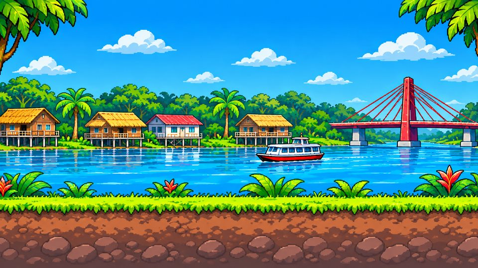
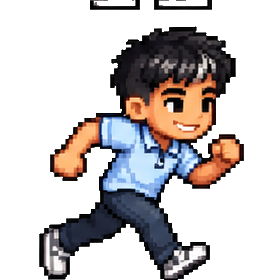
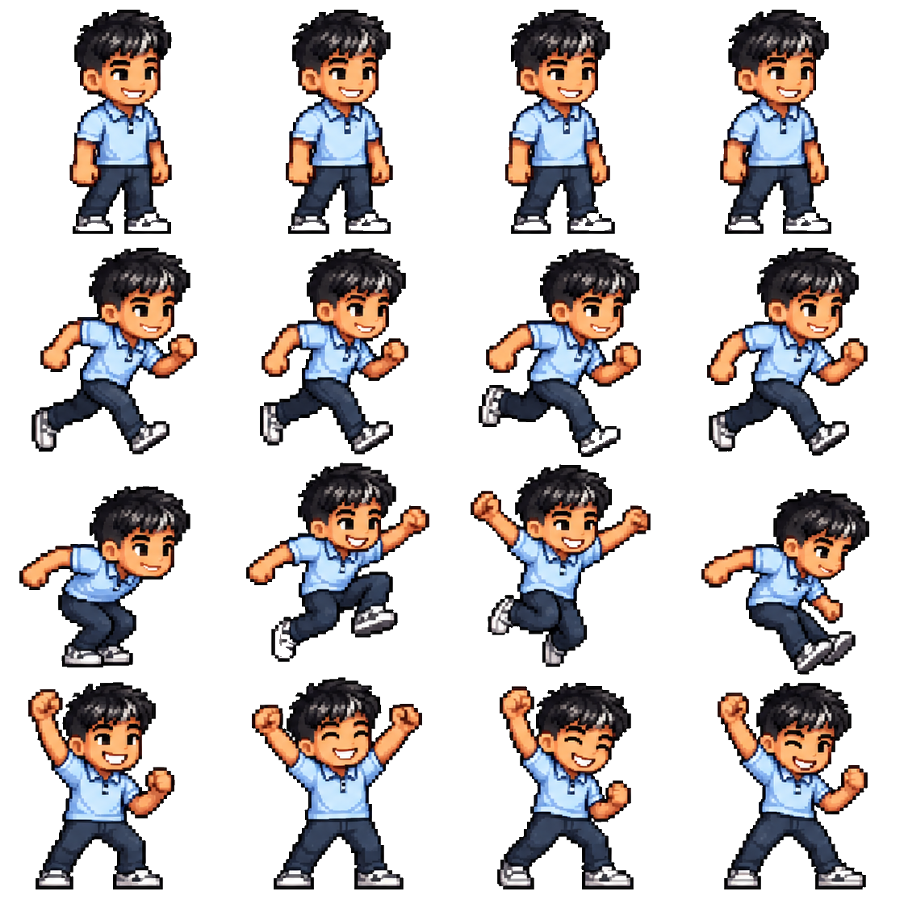
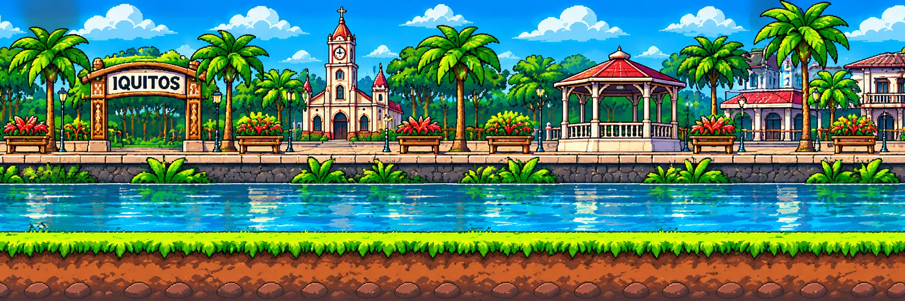
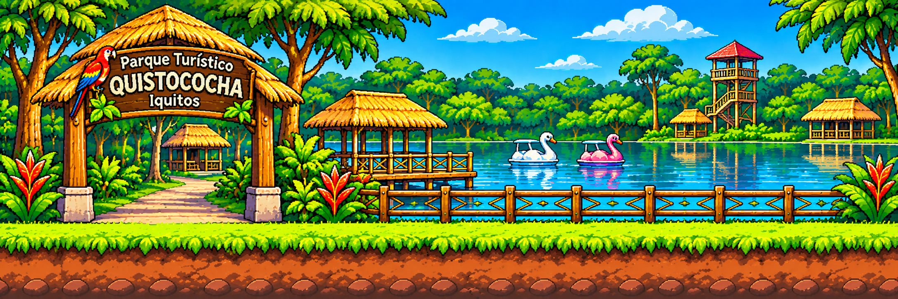

1
Ribera de Iquitos
Aprende a dominar los saltos, esquiva los primeros obstáculos y reúne las plantas mágicas para llegar a la meta.

¡Corre, salta y explora los paisajes de nuestra Amazonía! Acompaña a nuestro aventurero en un recorrido lleno de retos, plantas mágicas y escenarios inspirados en Iquitos.
La Gran Aventura es un videojuego de plataformas tipo runner con estética pixel art. El jugador recorre escenarios inspirados en lugares emblemáticos de Iquitos, esquiva obstáculos, evita aves en movimiento y recoge plantas para avanzar.
Cada etapa propone un nuevo paisaje y aumenta el desafío. Tendrás que administrar tus tres vidas, completar el recorrido y reunir las plantas mágicas para convertirte en el campeón de esta aventura.


Aprende a dominar los saltos, esquiva los primeros obstáculos y reúne las plantas mágicas para llegar a la meta.

La aventura continúa junto al río. Mantente atento, conserva tus vidas y completa la recolección.

Supera la etapa final, recoge las plantas mágicas y alcanza la meta para ganar.
“La Gran Aventura convierte lugares reconocibles de Iquitos en un recorrido interactivo. Su estilo pixel art, sus escenarios coloridos y sus tres etapas hacen que cada avance sea un nuevo reto.”RESEÑA DESCRIPTIVA DEL VIDEOJUEGO
Demuestra tus reflejos y completa los tres niveles de La Gran Aventura.
EMPEZAR A JUGAR